Using vmc for posterior predictive check
vmc.RmdIntroduction
This vignette introduces the vmc package, which
facilitates model check visualizations (i.e., comparing observed data to
model predictions) for Bayesian models in R. This vignette follows a
standard model checking workflow to show how to use vmc.
For more detailed description of geoms and comparative layouts, see
vignette("uncertainty-representation") and
vignette("comparative-layout").
Setup
The following libraries are required to run this vignette:
library(dplyr)
library(purrr)
library(vmc)
library(ggplot2)
library(ggdist)
library(cowplot)
library(rstan)
library(brms)
library(gganimate)
theme_set(theme_tidybayes() + panel_border())These options help Stan run faster:
rstan_options(auto_write = TRUE)
options(mc.cores = parallel::detectCores())Model
Let’s fit a simple model on datasets::mtcars with
default priors and four predictors:
model = brm(
bf(mpg ~ disp + carb + vs + am),
init = "0",
data = mtcars,
iter = 6000,
sample_prior = TRUE,
file = "models/get-started_model.rds" # cache model (can be removed)
)The result looks like this:
model
#> Family: gaussian
#> Links: mu = identity; sigma = identity
#> Formula: mpg ~ disp + carb + vs + am
#> Data: mtcars (Number of observations: 32)
#> Draws: 4 chains, each with iter = 6000; warmup = 3000; thin = 1;
#> total post-warmup draws = 12000
#>
#> Regression Coefficients:
#> Estimate Est.Error l-95% CI u-95% CI Rhat Bulk_ESS Tail_ESS
#> Intercept 26.36 2.98 20.52 32.22 1.00 6901 7124
#> disp -0.02 0.01 -0.04 -0.01 1.00 7061 8104
#> carb -1.26 0.39 -2.05 -0.50 1.00 8987 7811
#> vs 1.21 1.67 -2.13 4.45 1.00 7621 8050
#> am 4.13 1.43 1.31 6.95 1.00 7844 8398
#>
#> Further Distributional Parameters:
#> Estimate Est.Error l-95% CI u-95% CI Rhat Bulk_ESS Tail_ESS
#> sigma 2.76 0.40 2.12 3.66 1.00 8124 7810
#>
#> Draws were sampled using sampling(NUTS). For each parameter, Bulk_ESS
#> and Tail_ESS are effective sample size measures, and Rhat is the potential
#> scale reduction factor on split chains (at convergence, Rhat = 1).Generate graphical posterior predictive checks
Now that we have the model, we can begin to construct model checks.
This often starts with a density plot comparing the posterior predictive
distribution and observed data distribution. mcplot() here
generates a density plot by default if no other options are defined.
model %>%
mcplot()
#> Warning: No shared levels found between `names(values)` of the manual scale and the
#> data's fill values.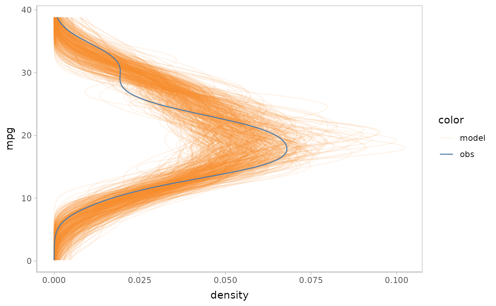
vmc puts the response variable on the y-axis by default.
You can flip the plot to generate a canonical posterior predictive check
using a density plot. vmc enables you to do this by using
mc_gglayer to add a ggplot2 layer to model
check.
model %>%
mcplot() +
mc_gglayer(coord_flip())
#> Warning: No shared levels found between `names(values)` of the manual scale and the
#> data's fill values.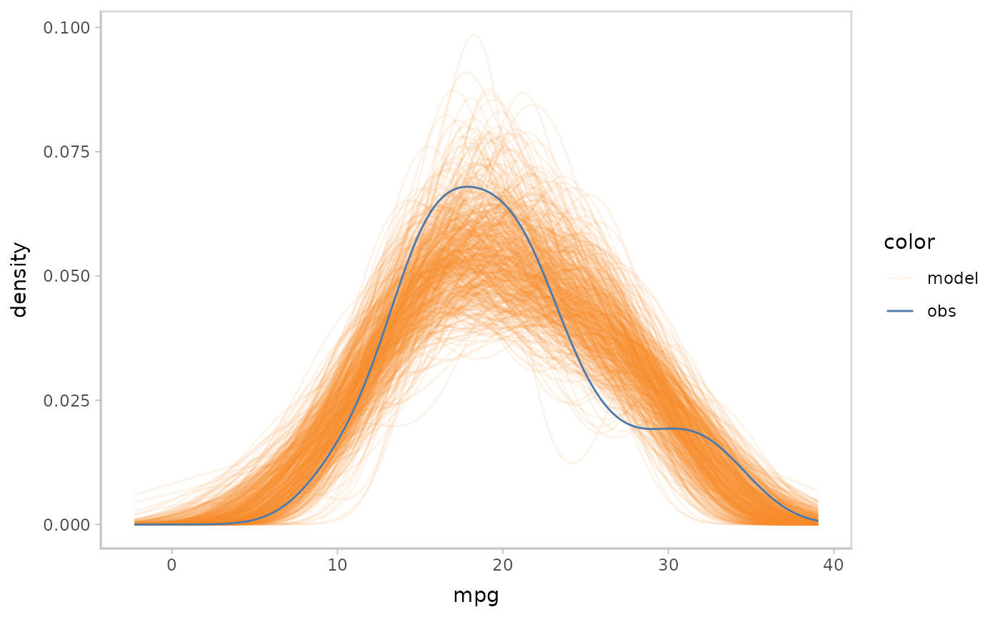
mcplot() uses defaults to make a model check
visualization when users don’t explicitly define everything. The above
lines are roughly equivalent to following:
model %>%
mcplot() +
mc_draw("prediction") +
mc_model_line(stat = "density", alpha = .1) +
mc_obs_line(stat = "density") +
mc_layout_superposition() +
mc_gglayer(coord_flip())
#> Warning: No shared levels found between `names(values)` of the manual scale and the
#> data's fill values.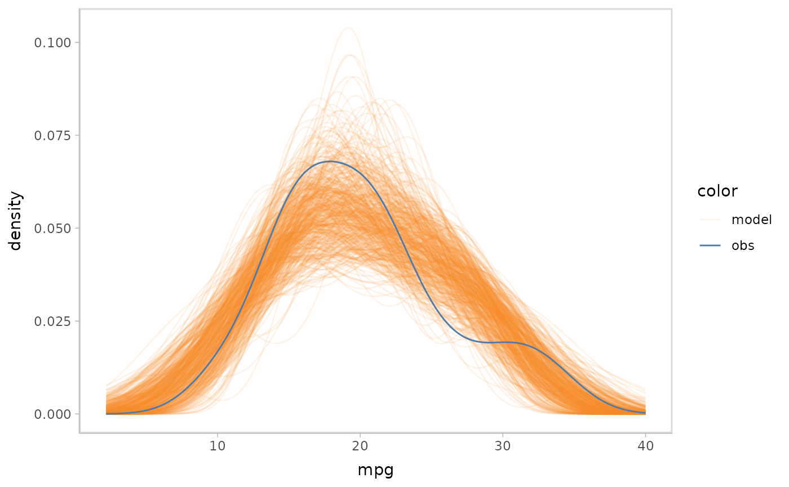
mc_draw() defines how vmc would draw the
posterior distribution, where "prediction" says to draw
from the posterior predictive distribution and
newdata = NULL says to use the observed dataset to
generate. mc_model_line() and mc_obs_line()
define the geom of model predictions and data observations and choose a
suitable geom for users based on data types.
mc_layout_superposition() defines the comparative layout of
the model check as superposition, i.e. to overlay model predictions and
data observations. mc_gglayer() adds
ggplot2::layer() to the model checking visualization. We
will discuss more details about these functions in later sections.
Add conditional predictions for posterior predictive checks
Model checking is not restricted to a single variable check, but can
also involve conditional variables for checking the response variable’s
marginal effects on them. For example, we want to check the impact of
disp on mpg in the above model. By using
vmc, it’s pretty easy to do this by just adding one line of
code:
model %>%
mcplot() +
mc_condition_on(x = vars(disp))
#> Warning: No shared levels found between `names(values)` of the manual scale and the
#> data's fill values.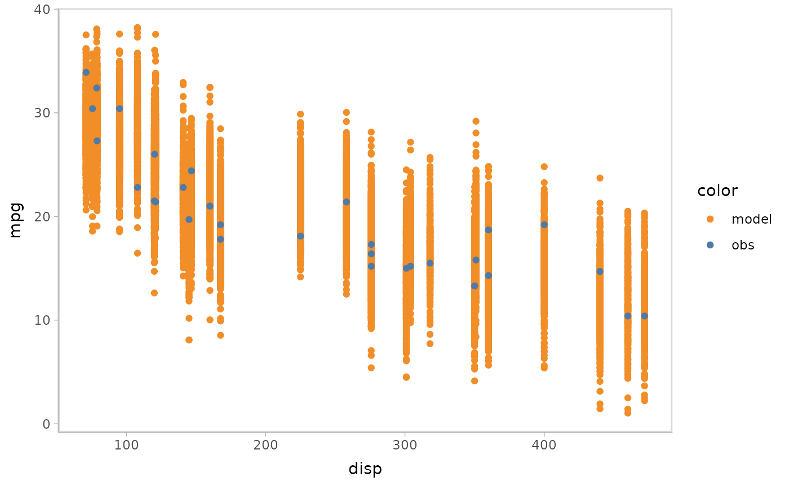
Then you can apply some uncertainty representations to model
predictions in vmc. For example, lineribbon
and point+interval
are shown below.
- Lineribbon:
model %>%
mcplot() +
mc_model_lineribbon() +
mc_condition_on(x = vars(disp))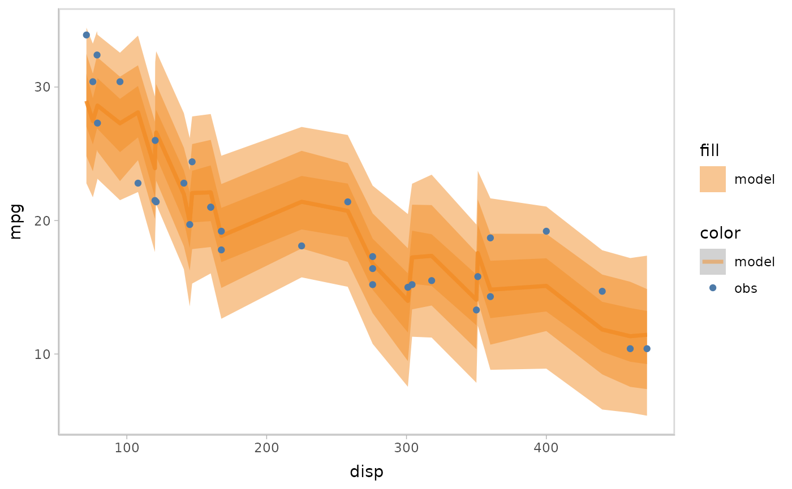
- Point + interval
model %>%
mcplot() +
mc_model_pointinterval() +
mc_condition_on(x = vars(disp))
#> Warning: No shared levels found between `names(values)` of the manual scale and the
#> data's fill values.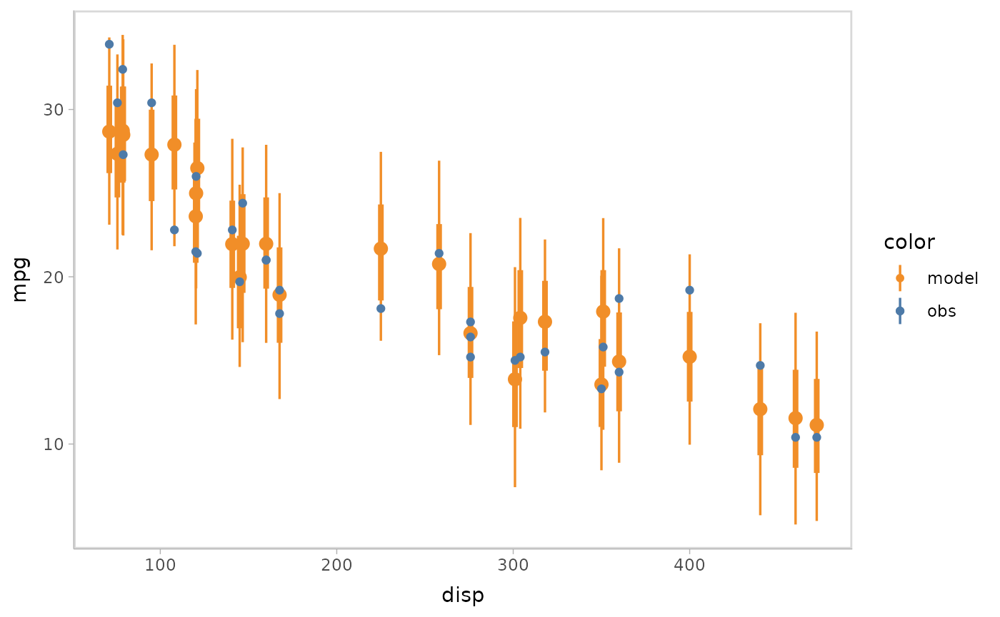
You can also show different draws by animation (HOPs.).
model %>%
mcplot() +
mc_model_point(group_sample = "hops") +
mc_condition_on(x = vars(disp))
#> Warning: No shared levels found between `names(values)` of the manual scale and the
#> data's fill values.
Or you can use HOPs and other uncertainty representations together.
model %>%
mcplot() +
mc_model_pointinterval(group_sample = "hops", n_sample = 50) +
mc_condition_on(x = vars(disp))
#> Warning: No shared levels found between `names(values)` of the manual scale and the
#> data's fill values.
#> `nframes` and `fps` adjusted to match transition
Changing comparative layouts
Since model check visualizations involve checking the model’s
performance by comparing model predictions with observed data,
vmc also enables users to change comparative layouts for
the model predictions and data observations using the function
mc_comp_layout(). vmc has four predefined
comparative layouts: juxtaposition, superposition, nested juxtaposition,
and explicit-encoding.
Juxtaposition puts the model predictions and data observations side by side. Juxtaposition is especially useful when model predictions and data observations overlap in superposition so they can not be distinguished well.
model %>%
mcplot() +
mc_model_eye() +
mc_obs_eye() +
mc_condition_on(x = vars(carb)) +
mc_layout_juxtaposition()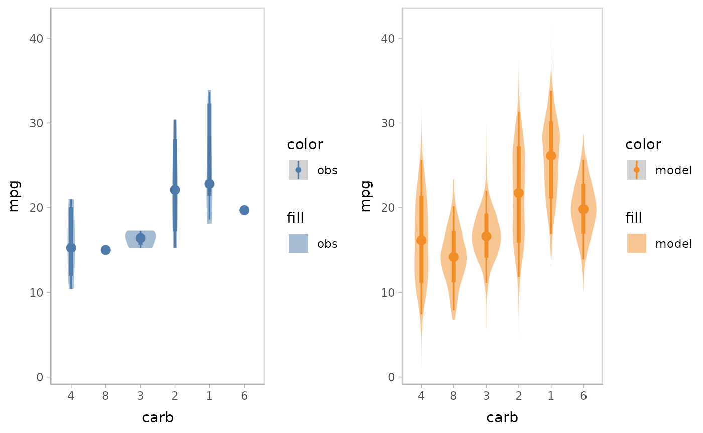
Superposition is the default comparative layout by vmc.
It superimposes the model predictions and data observations in a single
plot.
model %>%
mcplot() +
mc_model_eye() +
mc_obs_eye() +
mc_condition_on(x = vars(carb)) +
mc_layout_superposition()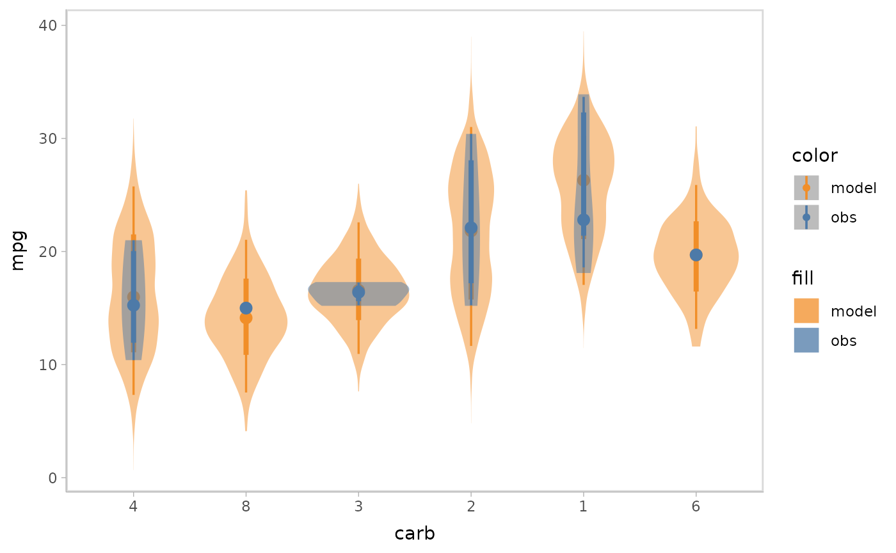
When checking model conditional on a discrete variable, there may be cases where you want to avoid superposition, since that would make data points overlap, as well as juxtaposition, since the visual distance between themodel predictions and data observations would be too large. In these cases, nested juxtaposition can be a good choice, which plots model predictions and data observations in one plot but dodges them to avoid overlap.
model %>%
mcplot() +
mc_model_eye() +
mc_obs_eye() +
mc_condition_on(x = vars(carb)) +
mc_layout_nested()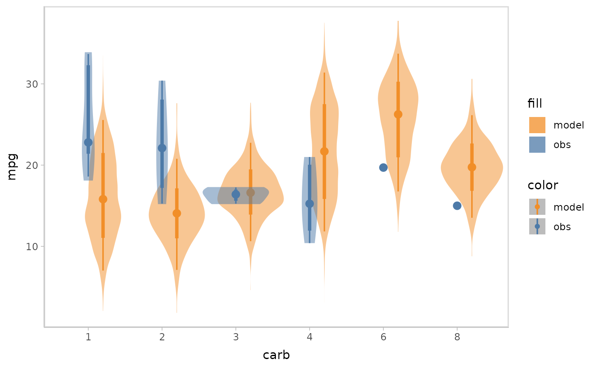
Explicit-encoding focuses on revealing the relationship between model
predictions and data observations by explicitly encoding and plotting
the difference. Some common examples are residual plots, Q-Q plots, and
wormplots. vmc supports explicitly-encoding by enabling
users to pass in the operation (exp_op) when they want to
do in explicitly-encoding comparison. vmc predefines
several common explicitly-encodings (e.g. residual plot and Q-Q plot)
but users can also pass in a customized operation function.
Residual plot with uncertainty representation lineribbon:
model %>%
mcplot() +
mc_model_lineribbon() +
mc_layout_encoding(transform = "residual") +
mc_condition_on(x = vars(disp)) +
mc_gglayer(geom_hline(yintercept = 0))
Q-Q plot:
model %>%
mcplot() +
mc_draw(ndraws = 1) +
mc_layout_encoding(transform = "qq") +
mc_gglayer(geom_abline())
#> Warning: No shared levels found between `names(values)` of the manual scale and the
#> data's fill values.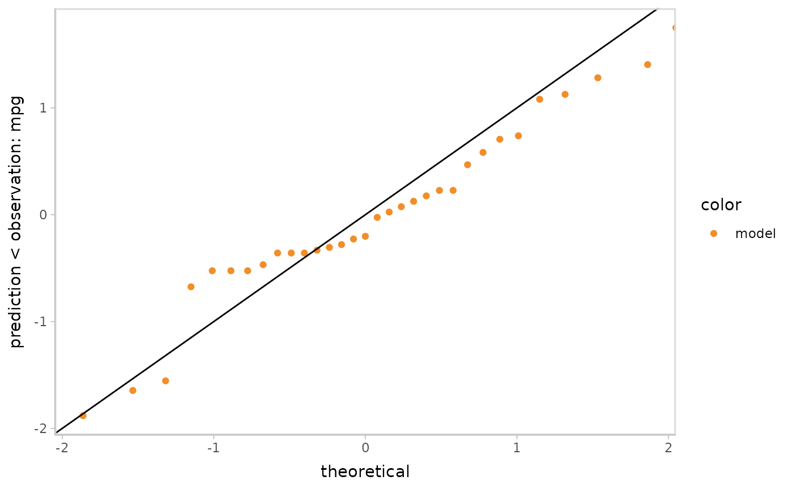
You can also cutomize the operation function to make the
explicitly-encoding into any desired explicit comparison. The customized
function should take a data frame including two columns for predictions
and observations as input and return a data frame with columns named
y_axis and x_axis (optional).
Standardized residual plot (using customized operation function):
std_res_func = function(data) {
data %>%
mutate(y_axis = prediction - observation) %>%
mutate(y_axis = y_axis / sd(y_axis))
}
model %>%
mcplot() +
mc_model_lineribbon() +
mc_layout_encoding(transform = std_res_func) +
mc_condition_on(x = vars(disp)) +
mc_gglayer(geom_hline(yintercept = 0))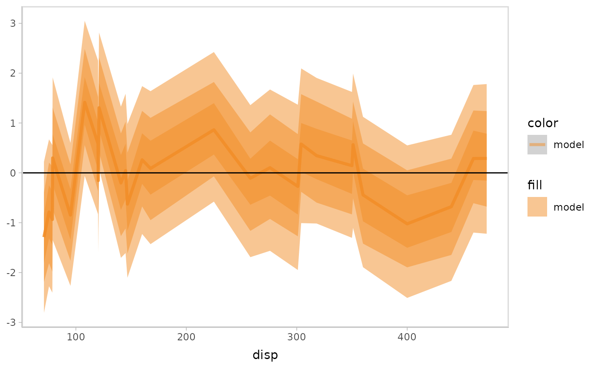